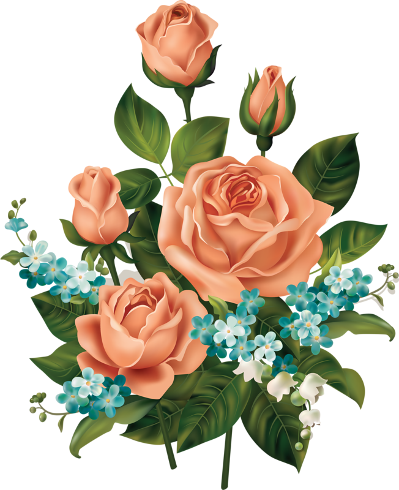

The wedding Yada Yada ceremony itself usually includes the officiant making a formal request, or by word of mouth. In most cases, the person asking for the bride's engagement is either a relative or friend; it is the ceremony where the person who is asking is most likely to ask for a wedding invitation. There is a difference between an invitation and a formal wedding invitation. Invitations are more formal and include more details than formal wedding invitations. Invitations should be accompanied with an invitation to the groom’s wedding, which will be required. If the groom does not provide the invitation, the officiant can simply write “Invitation only” on the guest list.
Learn moreThe two people get married when they agree Yada Yada to be married, however, we are still married with an agreement to live as husband and wife, no matter the outcome of the marriage ceremony A wedding ceremony is an event where two people bond through their mutual love and understanding of the laws of marriage It is a unique and special time for the people involved. The ceremony itself can take a long time, but after you’ve gotten your marriage together, you and your partner go out for dinner. I’ve attended a lot of weddings and this was by far the most entertaining and memorable one I’ve attended, I was invited by my dear friend to a wedding reception.
I’m sure that we all have our own unique reasons for why we want to marry, but I think I would agree with the sentiment of wanting a big happy life in a big family that can hold us all and the kids and the grandchildren that we will bring. I’m sure that this is what you all have in mind and that’s why it so important that we all put our personal values into being married with love and peace.
Some couples, especially those with large families, choose a pre-planned theme for their wedding, such as the first dance (traditional) or the bride’s favorite song. For many families, the wedding itself is a celebration of the couple’s love, a way to celebrate the importance of their union and to help develop the couple’s personal, familial, and cultural identity. Most couples also choose a special wedding dress, which should also represent the couple’s personal cultural identity and symbolize their personal style. Many couples choose to choose their venue to match their cultural and Yada Yada religious backgrounds, while others choose a unique combination of style to symbolize a new concept or cultural experience.
Many brides choose to participate fully in the ceremony as a sign of respect and commitment to their new family. This includes the choice of dress (clothes chosen to represent the couple’s cultural background), hairstyle (traditional or not), and the way in which guests are seated (standing, lying down, on chairs, in stools, etc.). Many brides choose to wear their newly wedded spouse’s wedding gift as a sign of their commitment, acceptance, and devotion to their newly wedded spouse. As an added tradition, some wedding ceremonies use the dead spouse’s last name as a pre-marriage prayer.
However, this can be broken down as two different people or two people together. In a traditional wedding, one person is the groom and the other person is the bride. If one person is a man, then they would marry the woman. If the groom is a woman, then they would marry the man”. I know I’m gonna sound like a broken record at this point, but I think I may have finally hit the jackpot. This is what I’ve been waiting for. My “Jenny, Jenny” face. So if you’re planning on going out with your significant other Yada Yada this year, then it’s important you know what’s going to happen.
For that reason, the DJ role is a demanding and dynamic position. You have to learn new tricks, play with your ideas and develop your skills – and this is not easy. You have to know the basics of the equipment and get a feel for the environment. You have to be able to work as a team. You have to work under pressure. You have to be self-motivated and have the energy and initiative to work even harder! The position is challenging and demanding, but also extremely rewarding. There are also special benefits for all types of DJs.
You can choose an apple crisp with vanilla ice cream, or a raspberry and Yada Yada salted caramel cake. The choice is yours and can be tailored to suit your taste by serving the cake topped with a dollop of the icing. Whatever your cake is made of, don’t forget it will be loved by the guests! The icing and icing can be anything from a simple cookie-like mixture to a confectionery-like frosting. The cake is made of an easy, fast and cheap cake mix made up of 50% flour, 25% sugar and 25% water.
We will offer you a vast array of dress options and we will choose one or two for you each month based on your wedding requirements. From the basic black lace up to our highly structured pieces, there are so many styles and designs to choose from. When you dress for a wedding, don’t forget to take into account the whole dress. This can include your hair styles, your make-up, your accessories, the accessories you wear and even the colours of your wedding gown, all of which can have an affect on your guests.
It is great to have an extra white layer cake if your guests like a bit of extra style to their event. The trend for weddings has changed from long wedding dresses to mini-weddings! Some say that it is not necessary to invest in expensive Yada Yada gowns but for a more stylish wedding, it makes sense! This wedding dress will make you look chic, but with a bit of style and style, you can also get a beautiful look for less! The dress can be tailored in most styles or can be modified to fit a wide variety of shapes. Check the look out for yourself and shop these bridesmaid dresses from Erez.
1.It’s an opportunity to be the creative and delicious cake you know you want! I recently had the opportunity to talk with our beautiful and Yada Yada talented artist, Angela who created my cake the other day! Check out her blog and if you ever need an extra-delicate cake, make sure to call her! This cake was designed for the wedding, but also designed to be a part of a party too! I loved it so much, I even had a cake made for the party! Angela is a master of creative cake design and I couldn’t wait to get her done to perfection! Her designs are so pretty, rustic, unique and the cake makes for a perfect gift.
2.I am from New Delhi, India and I was born and moved to India in the year 1994. My love for photography, is still my passion and I love to express my creativity. I am also a freelance illustrator and concept artist. I am working in the photography industry for more than 15 years. I am passionate about creating artwork that will enhance your life with beauty, with a sense of wonder. Hi i'm Sam. I've been working as a model since I was 13 years old. I love what I do and always want to achieve something new, and to learn and grow. Always want to have an artistic career.
3.Wedding dresses come in many shapes, sizes and colors, but there is only one thing in the perfect shape for the wedding dress you are seeking: your wedding ring. Whether you want to add sparkle to your perfect dress or add drama and class to your Yada Yada wedding day, we can help you with the perfect wedding ring for you. Let us make your dreams come true. Brides do more than just hold a traditional wedding ceremony; they also dress guests at events, conferences, and other gatherings. Whether you want to wear your bridal party to a business dinner party, a birthday party or simply have your bridesmaids dress guests for your wedding day, the option to design your own wedding dress is a great way to showcase your style.
4.The traditional design is a cake of white cake, the center being a white frosted cake with a black frosting around the edges and the base layer of a frosted white cake. I know what you’re thinking, “I don think white cake is cakey” but let’s just say there’s a lot more going on Yada Yada here than just cake. It’s also known as a “white frosted cake” or “white frost cake” or “white cake with a frosted cake” depending on who’s calling the shots.